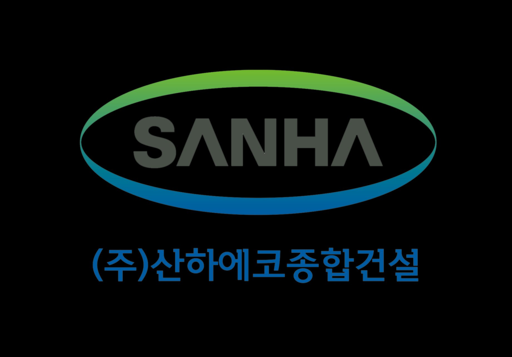

| 현재 | AI 건설 기업 | |
|---|---|---|
| 담당자 경험·인맥에 수주 의존 | → | 수주 역량이 조직 자산으로 전환, 담당자 교체에도 재수주율 유지 |
| 견적에 수일 소요 | → | 과거 데이터 기반 당일 견적 · 빠른 응답 자체가 발주처 신뢰 |
| 실적을 말로만 설명 | → | 공기 준수율·하자율 수치 제시 → 가격이 아닌 실적 경쟁 |
| 현재 문제 | 체계화 후 변화 |
|---|---|
| 역량 증명 불가 | 실적 수치를 제안서에 공식 제시 → 실적 경쟁 |
| 개인 종속 수주 | 발주처 이력 데이터화 → 재수주율 향상 |
| 느린 견적 응답 | AI 견적 → 빠른 응답 자체가 신뢰 |
| 서류 품질 의존 | AI가 기술제안서 초안 자동 생성, 담당자는 검토만 |
| 단계 | 대상 | 월 예산 |
|---|---|---|
| 즉시 | 본부별 담당자 4명 | 약 9만원 |
| 2단계 | 전직원 20명 | 40~60만원 |
| 3단계 | 전직원 고급 플랜 | 100만원+ |